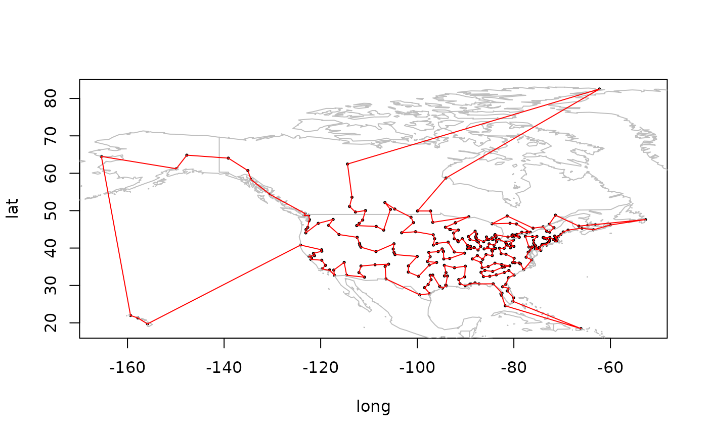

The USCA312 dataset contains the distances between 312 cities in the
US and Canada as an object of class TSP. USCA50 is a subset
of USCA312 containing only the first 50 cities.
Format
USCA312 and USCA50 are objects of class TSP.
USCA312_GPS is a data.frame with city name, long and lat.
Source
John Burkardt, CITIES – City Distance Datasets, Florida State University, Department of Scientific Computing
Examples
data("USCA312")
## calculate a tour
tour <- solve_TSP(USCA312)
tour
#> object of class ‘TOUR’
#> result of method ‘arbitrary_insertion+two_opt’ for 312 cities
#> tour length: 40721
# Visualize the tour if package maps is installed
if(require("maps")) {
library(maps)
data("USCA312_GPS")
head(USCA312_GPS)
plot((USCA312_GPS[, c("long", "lat")]), cex = .3)
map("world", col = "gray", add = TRUE)
polygon(USCA312_GPS[, c("long", "lat")][tour,], border = "red")
}
#> Loading required package: maps
